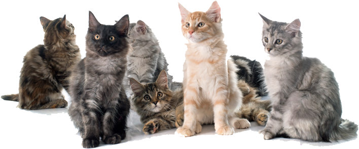
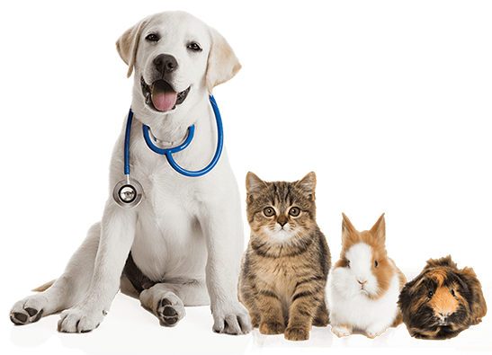
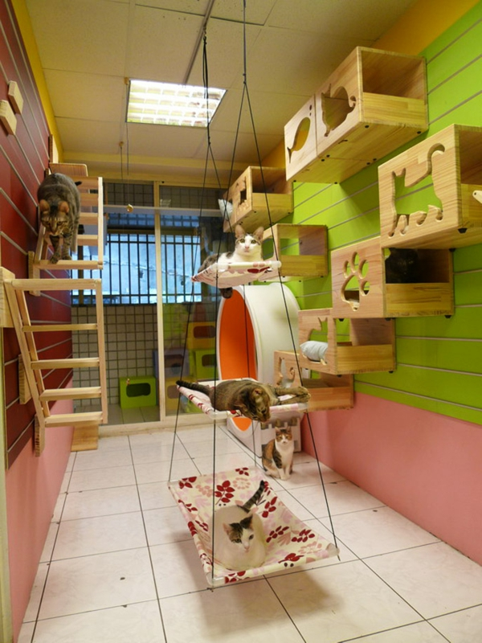
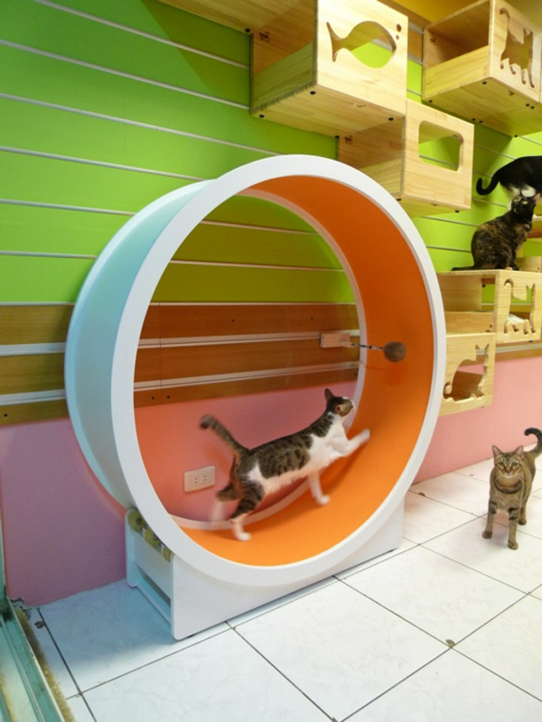
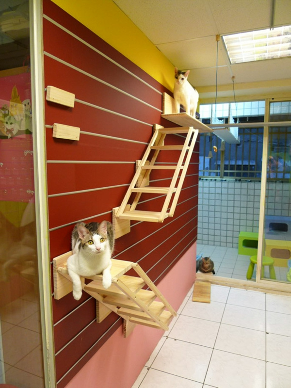
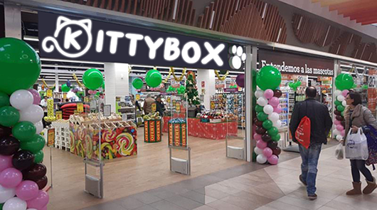

La caja de cartón que toda mascota felina le gustaría tener en casa.
En esta página encontraréis una variedad amplia de productos pensados para el bienestar y disfrute de vuestro animal.
Desde alimentación hasta juguetes, accesorios y un montón de cosas más. A su vez se puede pedir habitación en nuestro hotel gatuno para michis.
Para mayor información, hagan clic sobre los enlaces de la parte de arriba de la página. ¡Un placer tenerlos por aquí, miau!

KittyBox es una empresa internacional famosa en ser el primer hotel gatuno instaurado en España. También cuenta con su propia
tienda de animales y con más de 500 especialistas amantes de los animales.
Empezó siendo la ilusión infantil de una persona que siente un gran amor por los gatos y que ahora, después de muchísimos años,
ha conseguido cumplir su sueño: construir una guardería gatuna de calidad para todas esas personas que necesitan dejar a su gato
con alguien y que quieren sentirse seguros dejando a su felino en manos de auténticos profesionales.
En Kittybox nos esforzamos en entablar relación con otras empresas y obrar en nombre de la solidaridad. Colaboramos con
más de 25 marcas reconocidas en todo el mundo y nos comprometemos en nuestra lucha por un mundo mejor para los animales;
abonando un tanto por ciento del importe de las compras de nuestros clientes a fundaciones, asociaciones y protectoras de
animales necesitados como "Cats and Dogs Chispa",
"The Animal Collective",
"Pulgosas" y "Adopta un gatito Los Barrios".
Por favor, difundid y apoyadles. Os estaremos muy agradecidos y ellos todavía más. Muchas gracias

La franquicia KittyBox ofrece tres tipos de servicios diferentes para sus clientes.
Tienda de animales, peluquería y alojamiento para gatos. Este último cuenta con la atención de un
veterinario cualificado para un mayor control. Cada uno de estos servicios ofrece su cometido de cara al público
sin ningún tipo de condición adicional. Sin embargo, la empresa cuenta con un sistema de socios destinado a ofrecer ciertas
ventajas para las personas que deseen ser miembros de KittyBox. Las ventajas están reflejadas en la siguiente tabla.
| Tienda de animales |
Peluquería |
Alojamiento para gatos |
La obtención de una tarjeta de socio KittyBox. Cada compra realizada en nuestra tienda física o por la página web le
otorgará puntos que podrá canjear por descuentos para cualquier producto.
También podrá pedir productos del
que no dispongamos y encargarlo para recogerlo a tienda. |
Presentando un ticket de compra a su nombre y superior a 50 euros, primer corte y peinado totalmente gratis para
perro o gato.
Recordamos que el baño ni la pericura vienen incluídos en esta oferta, aunque sí podrá solicitar un completo
descontando el coste del corte y el peinado si se respeta los requisitos anteriores. |
No se cobrará los domingos de alojamiento de vuestro minino, aunque se trata de un día que el equipo trabaja
desde dentro y no está abierto al público para ofrecer el resto de servicios.
Cualquiera puede
llamar para ir a recoger a su gato sin ningún tipo de incovenientes avisando, con un día de antelación,
la hora de recogida para agilizar el proceso. |
Nuestra galería


¿Dónde estamos?
KittyBox es un edificio marrón de una planta con su nombre y logo en la fachada. Nuestra sede principal se encuentra en
Madrid, aunque también estamos repartidos por Sevilla, Algeciras y Málaga. Salvo los domingos, estamos todos los días abiertos
de 10:00 a 22:00 sin tener en cuenta los cambios de horario en festividades. Para más información, podeis llamar directamente
al teléfono +34 918 100000, mirar en nuestras redes sociales o redactar vuestra duda en la casilla que veréis a continuación.
Si lo que queréis es formar parte de nuestra plantilla, haced clic en "Trabaja con nosotros" y
completad los campos con los datos pertinentes. Os atenderemos con gusto
Solicitud de información